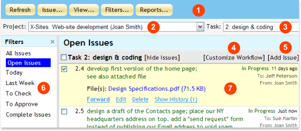
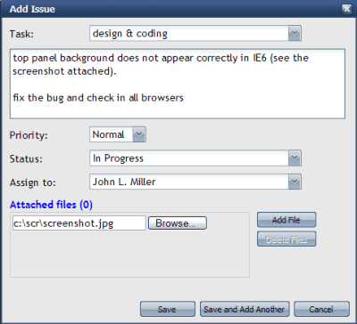
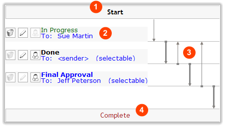
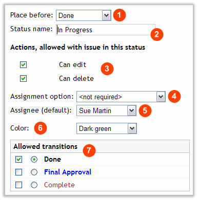
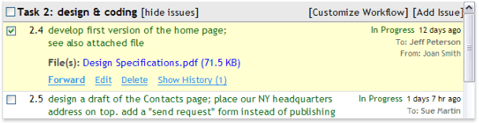
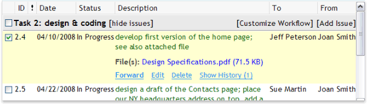

|
WebAsyst Issue Tracker at a glance
Here is your WebAsyst Issue Tracker main window:

- Toolbar: Click a button (e.g. Issue, View, Filters, Reports) to open a pull down menu and access main functional buttons to add/copy/move issues, customize view options and run reports.
- Project selector: All issues are grouped by projects and tasks. Click and choose the project you wish to work with. Only issues linked to this project will be displayed.
- Task selector: Tasks are linked to projects. Once you have a project selected, you can choose the task to work with. Only issues linked to this task will be displayed.
- Customize Workflow: Workflow is a route compliant with your business process. For every state in this route you can specify default assignee, allowed transition to other states, and other options. You can customize workflow separately for every project and task.
- Add Issue: Click to open Add Issue dialog and create a new issue linked to the current task.
- Filter pane: Select a filter to restrict visible issue list by a certain criteria, e.g. you can leave only issues assigned by you (or to you), recent issues added today or in last X days, etc. Filters are fully customizable and you can add your own filters.
- Issue list: This is the main working area where you can browse the list of issues satisfied to selected filter, forward, edit, and organize filters, and etc.
|
|
|
Adding a new issue
Click Issue -> Add Issue in the toolbar or use Add Issue link displayed on the right of the task description in the issue list.

NOTE: Adding issues is possible only in the context of the selected project and task. In other words, before adding issues you must have available at least one project and one task. Refer to WebAsyst Projects manual to learn how to create projects and tasks.
In the Add Issue form:
- Enter issue description in the text area.
- Select Priority: Low, Normal, or High. Issues with high priority will appear on the top of the issue list.
- Choose available Status (State) from the pull down menu. States depend on your workflow and are fully customizable by your project manager. Customizing workflow is described in details later in this manual.
- Assign to: Select user responsible for implementation of this issue. You can select only from the users assigned to this project/task.
- Click Attached files link to open an area where you can attach files to this issue.
- Click Save button to add the issue and return to the issue list, or click Save and Add Another button to add another issue.
|
|
|
Understanding workflow
WebAsyst Issue Tracker allows you to track issue implementation from start to completion using a workflow mechanism based on states and transitions. For every project/task you can customize workflow separately.
A sample of workflow diagram is shown below:

- Start: This is an initial point in every issue history. When you add a new issue you must expressly specify it's state from a list of available states defined by the project manager. In the workflow diagram sample shown above there is only one state, «In Progress», which you can set for a new issue.
- States: In your workflow you can define as many states as you need to meet your business process requirements. In the sample above there are three states defined; e.g. In Progress, Done, and Final Approval. This might be a suitable workflow for a software bug hunting process: a/. A Tester locates a bug and adds a bug report (issue) In Progress state to Sue; b/. Sue fixes the bug and forwards the issue to Done state assigning this issue back to Tester ( in the diagram); c/. Tester checks implementation and forwards the issue further to Jeff for Final Approval.
- Transitions: Workflow assumes that issues can be forwarded (transited) from one state to another. These possible transitions are shown on the diagram by arrows. In this sample one can send issue from In Progress state to Done only, from Done to Final Approval (default transitions designated by bold arrow) or back to In Progress, etc.
- Complete: The final state for every issue. This state is mandatory for every workflow. There is no way to go further; i.e., Complete state in the workflow diagram can have only inward arrows and no outward arrows, nor can you assign a user at the Complete state.
|
|
|
Customizing workflow
Click Tools -> Workflow Manager. Select a project in the pull down menu and a task in the list below for which you want to customize workflow. Alternatively, you can click Customize Workflow link in the issue list located next to the task description.
NOTE: Customizing workflow is the prerogative of the project manager or the user who has Full access rights to this project.
In the workflow diagram each state is designated by a rectangle with a name of state (status) inside, e.g. In Progress, Done, etc. Click a name of state to customize it or click Add State to open Define Workflow State form:

- Place before: Defines relative position of the current state in your workflow sequence.
- Status name: Brief description of the current state.
- Can edit: Enable this flag if you want to permit issues in this state to be edited. In the issue list for issues in this state users will see Edit button.
- Can delete: Enable this flag if want to allow deleting issues in this state. In the issue list for issues in this state users will see Delete button.
- Assignment options: Select one of the following:
- required/selectable - assignment is mandatory; user adding/forwarding issue into this state must select a person from the list of users assigned to the task
- required/not selectable - assignment is mandatory and predefined in Assignee property as described below
- not required - issue in this state can be assigned to a person but assignment is optional
- not applicable - personnel assignment is not applicable
- Assignee (default): Select user you want to assign by default to every issue in this state. Use "sender" option if you want to assign the user who has forwarded this issue from its previous state.
Sample: User James has created new issue in the state “In Progress” and assigned Sue. Sue has done her job and forwarded the issue to “Done”. If “Done” state has been designed to have "sender" as the default assignee, then Sue should not bother to assign someone when forwarding the issue to “Done”. James will be assigned by default as he was the "sender" of the original issue.
- Color: This color will be used to display issues of this state in the issue list.
- Allowed transitions: Select the states to which an issue from the current states are allowed. Click radio button for the state that should be default destination state for any transition from the current state.
- Click Save button to save settings for the current state and return to the workflow diagram.
|
|
|
Workflow templates
Every time you customize a workflow, you can save it as a template for repeat usage. To do so, click Save as Template button in Customize Workflow window. Alternatively, you can select a previously saved template while customizing a workflow for a new task by using Select from Template button.
To manage previously saved templates click Tools -> Workflow Templates. Click a template in the list and then 1). click Delete button to delete obsolete templates or 2). click Set as Default to make this template the default for new tasks you will create in future. You can not modify existing templates; if you need to do so, create a new workflow and save it as a new template.
NOTE: Access to Tools button is customizable. You must have access to Users & Groups section to customize access rights for yourself or other users. |
|
|
Working with your issue list
Issue list is your main working area from where you can add new issues, navigate between projects and tasks, forward issues from one state to another, modify or delete issues, customize list view, etc.
Issue list appears grouped by projects and tasks. Inside each task, issues are sorted by priority (High, Normal, Low) and then by date of creation (older issues on top).
Most common operations in the issue list are outlined below. |
|
|
Forwarding issues to another state
You can forward issues from one state (status) to another according to the workflow customized for the current task.
Point your mouse over this issue and click Forward link that appears beneath the issue description, or click Issue -> Forward Issue from the toolbar. In the Forward Issue dialog select the state to which you want to forward this issue, choose assignee, add optional comment and click Forward button.
You can forward issues in bulk mode. Select multiple issues from the list and follow the same steps as described above for a single issue.
NOTE: Project manager or user with Full access rights to this project can forward issues from a state to any other state, even if this kind of transition is not specified by the workflow definition for this task. |
|
|
Editing issues
Point your mouse over the issue you want to modify and click Edit link that appears beneath the issue description. In the Edit Issue dialog you can edit issue description, priority, change assigned person, and add/delete attached files.
All changes are logged. You will be able to see all issue modifications in the issue history.
Not every issue can be modified. You cannot edit issues if “Can edit” flag is expressly disabled for the current issue state in the workflow definition. You cannot edit issues that have Complete status.
NOTE: Project manager or user with Full access rights to this project can edit issues at any state even if editing is disabled by the workflow definition for this task. |
|
|
Copying/Moving/Deleting issues
Select issues and click Issue -> Copy Issue(s) to copy or Issue -> Move Issue(s) to move.
Issues can be copied and moved from one task to another in the same project or even between different projects. If there is not such a state (status) in the workflow definition of the destination task, then you will be offered the opportunity to select new available status for copied/moved issues.
To delete an issue, point your mouse over this issue and click Delete link that appears beneath the issue description. To delete multiple issues at once, select them and click Issue -> Delete Issue(s). Deleting issues is an irreversible operation.
You can not move or delete issues if “Can delete” flag is expressly disabled for the current issue state in the workflow definition.
NOTE: Project manager or user with Full access rights to this project can move/delete issues at any state even if deleting is disabled by the workflow definition for this task. |
|
|
Sending reminders
Issue reminders are Email notifications that can be sent to users assigned to these issues. Select one or more issues from the list and click Issue –> Remind. In the Reminder form enter an optional note and enable “Headers only” flag if you wish to skip full issue description in the message.
NOTE: If you send reminders to multiple issues assigned to different persons, then each person will receive reminders only for those issues to which he/she is assigned. |
|
|
Customizing issue list view
There are two issue list view options:
List (default view): Issue description occupies the major part of the issue list area, while additional information (e.g. issue status, sender, assignee, etc.) is moved to the right side of your screen.

Grid: Tabular format where issue attributes are displayed in different columns.

To change view, click View button in the toolbar and select Grid or List.
Click View -> Customize View to customize certain options for both formats; e.g., number of issues you want to display on one page, number of visible characters in issue description (you will see [more...] link to display all description), visible/hidden columns for Grid view, and some visible options for List view. |
|
|
Viewing issue history
The history for every issue is logged; e.g. date of creation and issue author, issue transitions from one state to another, modifications of issue description and priorities, etc.
To view history of a single issue, point your mouse over this issue and click View History link beneath the issue description. Issue history section will appear right under this issue in the issue list.
If you want to display history for all issues in your list all the time, click View -> Display Issue History in the toolbar. To hide history for all issues, click View -> Hide Issue History. |
|
|
Printing issue list
Click Issues -> Print and select what you want to print:
- Selected issues
- Current page
- Entire issue list – all issues that satisfy to selected filter
Click Print button. A new window will open with printer-friendly black-and-white issue list that you can send to printer. |
|
|
Filtering issue list
Filtering allows you to display your issue list with different restrictions that meet some specific criteria. This feature is useful for large lists that contain many issues created and assigned to different users at different times, ranging from one day to one year ago, in different states, of high and low priority, etc.
WebAsyst Issue Tracker includes a list of predefined filters accessible in the Filters pane:
- Open Issues – shows all issues that are not yet completed
- Last Week – shows all issues, whether open or complete, that were created in last week
- Assigned to Me – shows issues assigned to the current user
- I am Sender – shows open issues forwarded by the current user to others
- Pending 1 Week + - shows issues that were not forwarded for a week (7 days) or more
Clicking on a filter will automatically run your issue list through the selected criteria and display the filtered issue list. |
|
|
Organizing filters
Filters are fully customizable: you can create new filters, modify or delete existing filters.
To create new filter, click Filters -> Add Filter. In the Add Filter form specify following parameters:
Show Issues section:
- Created By: only issues created by selected person will pass the filter
- Sent By: only issues forwarded by selected person will pass the filter
- Assigned To: only issues assigned to selected person will pass the filter
- Open & Complete: all issues, open and complete, will pass the filter
- Open Only: only open issues (not complete) will pass the filter
- Complete Only: only complete issues will pass the filter
Filter Issues by creating date section:
- Do not filter by creating date: issue create date will not effect the filter
- Show issues created in last ___ days: specify an integer value, e.g. 1 – will leave only issues created today in your issue list; 7 – will leave all issues created in the last week
- Show issues created ___ days ago or earlier: allows you to select “old” issues; specify an integer value, e.g. 30 – will leave only issues created 30 days ago or earlier in your issue list
Other filtering options:
- Select visible issue statuses: allows you to set detailed filtering of open (not complete) issues by specified statuses
- No forwarding for ___ days or more: allows you to find “forgotten” issues which are open and do not “move” for a specified period of time
- Issue description contains following text: enter a key phrase contained in issue description for issue to pass the filter
Every filter must have a name. Enter filter name in Save As box (e.g. My Issues).
Click Save button.
To modify a filter, select it in the list and click Filters -> Modify Filter. You can add or modify any criteria in filter’s options list.
NOTE: “All Issues” filter is special and can not be modified.
To delete a filter, click Filters -> Organize Filters, select the filter you wish to delete, and click Delete. |
|
|
Reports
Click Reports -> Issue Statistics from the toolbar to run the following statistics reports:
- Project vs. Issue Status
- Project vs. Assigned Person
- Project vs. Priority
- Assigned Person vs. Issue Status
- Assigned Person vs. Priority
To access the list of all files attached to different issues, click Reports -> File Attachments. |
|